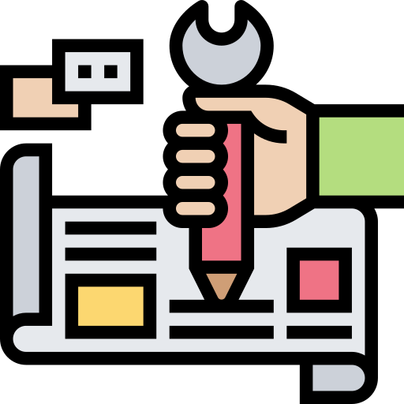
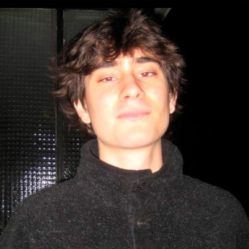
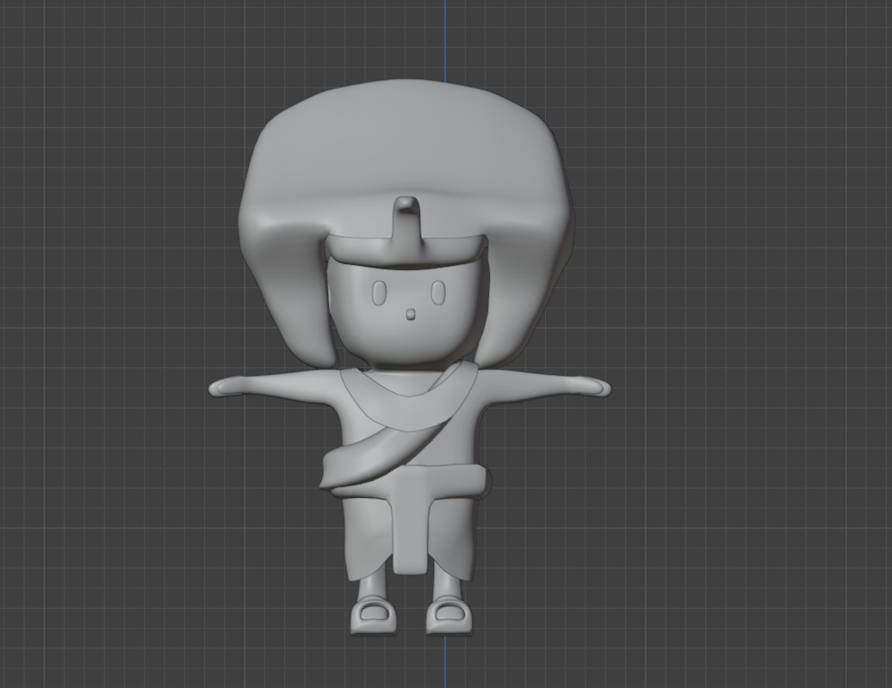

Descubre el nuevo videojuego desarrollado por LagarTech
TimeSpin es un videojuego basado en diferentes épocas históricas, de lo que se trata es de ir completando en una partida con otros jugadores los distintos minijuegos ofrecidos y con ellos ir sumando puntos para al final determinar un ganador. En cuanto a los aspectos que ofrece el videojuego son:
Competitividad
TimeSpin ofrece un entorno de juego sano y competitivo donde poder medir tus habilidades con el resto de jugadores e ir consiguiendo recompensas.
Aprendizaje
TimeSpin está centrado en crear interés por la historia empleando distintos datos con los cuales podrá conseguir recompensas contestando bien cuando se le requiera, haciendo que el jugador se quede con ellos de una forma distendida y divertida mediante un sistema de logros.
Diversión
TimeSpin ofrece diversos minijuegos con mecánicas distintas con los cuales pasarlo bien y competir ya sea con amigos, familia o nuevas personas.
Fecha de salida, futuro del juego, actualizaciones, DLC's...
19/10/2024
Inicio del proyecto y prototipo
Desarrollo de una versión prototipo del juego con parte de las funcionalidades. En este prototipo se presentan:
- Modo online con conexión a servidor dedicado, servicio de búsqueda de partidas y creación de salas con hasta 4 jugadores
- Posibilidad de jugar una partida a partir de 2 jugadores
- La partida consiste en jugar de forma consecutiva al minijuego 2 (egipto), el minijuego 4 (maya) y el minijuego 5 (futuro)
- Posibilidad de personalización del personaje con un nombre
- Modo de práctica con dos minijuegos (es decir, modo local para un solo jugador): minijuego 1 (prehistoria), minijuego 3 (medieval)

28/10/2024
Beta
Desarrollo de una versión beta con todas las funcionalidades disponibles, se pretende recibir feedback de la comunidad de jugadores y encontrar errores en el juego
20/11/2024
Gold Master
Desarrollo y publicación de la versión final del juego
¡Se parte
de nuestra
HISTORIA!
Equipo
¡ Conoce a nuestro equipo de desarrollo !
Jose María Soriano Villalba
Director de proyecto y de programación
Jacobo Sanchez García
Programador principal
Juan Coronado Gómez
Diseñador y gestión documental
Santiago Rubio Montero
Director de arte y artista conceptual

Luis Fernando Rodriguez Rivera
Modelador 3D
LagarTech está compuesto por estudiantes de diseño y desarrollo de videojuegos de la universidad Rey Juan Carlos de Madrid, cada uno trabaja en el sector al que está destinado a dedicarse en un futuro para poder explotar al completo las habilidades de cada persona y juntos construir un producto profesional.
Las mecánicas del videojuego varían en función del minijuego que se vota para jugar. Lo primero es entender cómo funciona el lobby de este juego.
El lobby es una sala dentro de un museo a la que se unen los 4 jugadores tanto al inicio de la partida como después de cada ronda.
En ella, los jugadores se pueden mover libremente dentro del espacio predefinido e interactuar con la pantalla en la que se encuentran los 5 minijuegos disponibles para realizar una votación entre todos los participantes y elegir el primer minijuego a jugar.
Una vez se realiza esa primera prueba, se vuelve al lobby y se realiza una nueva votación, sin posibilidad de votar el minijuego que se ha jugado previamente. Una vez todos los jugadores estén en el lobby y listos para comenzar,
disponen de 45 segundos para realizar esa votación. En caso de empate entre algunos de los minijuegos, la prueba se elige de forma aleatoria.
s
Minijuegos
A que tipo de pruebas nos enfrentamos en TimeSpin?
Prehistoria: En este minijuego, la mecánica principal es moverse y golpear a los distintos tipos de dinosaurios que aparecen en los 9 agujeros de los que se compone el mapa para esta prueba. Hay tres tipos de dinosaurios, el velocirraptor que es más rápido y más difícil de golpear otorga 2 puntos, un T-Rex que en vez de un golpe es necesario darle 2 y otorga 3 puntos y un dinosaurio base que otorga 1 punto. La aparición en los agujeros y del tipo de dinosaurio es aleatoria. Este minijuego tiene la duración de 1 minuto.
Egipto: El segundo minijuego está ambientado en la época egipcia, en él, los jugadores se encuentran atrapados en una pirámide llena de momias y trampas. La duración de este minijuego es de 2 minutos y la mecánica principal es la supervivencia, el jugador que más tiempo aguante sin ser atrapado por una momia gana. El tablero se compone de 13 columnas y 9 filas de celdas cuadradas, algunas caminables y otras no. A medida que va transcurriendo el tiempo de juego, a partir de los 20 segundos, cada 10 segundos aparecen pinchos en una de las 10 casillas predefinidas del mapa, que cierran el paso de los jugadores y las momias. Además, cada 30 segundos se genera un enemigo más, haciendo que aumente la dificultad progresivamente.
Medieval: En este tercer minijuego los jugadores se ubican dentro del patio de un castillo. En este patio cuadrangular, se dispone de un espacio dedicado para cada jugador que se sitúa en cada uno de los lados del mapa, siendo la mecánica principal ir al centro del patio para recoger espadas de distintos materiales consiguiendo de esta manera puntos. Para obtener los puntos se deben depositar los objetos en cada una de los espacios dedicados que se mencionan anteriormente. Los objetos a recoger son espadas, de bronce 1 punto, de plata 2 puntos y de oro 5 puntos. Solo se puede coger un objeto a la vez. Los puntos se otorgan a medida que se introducen los objetos en el recinto de cada jugador, la prueba dura 1 minuto. Dentro del mapa también se introducen obstáculos, como pueden ser carros de mercadillo antiguos o barriles para aumentar el nivel de la prueba.
Maya: Este minijuego se desarrolla en una jungla típica de la época Maya, siendo la mecánica principal correr una carrera entre todos los jugadores. Tendrán que ir sorteando distintos obstáculos, que les entorpecen el paso: una serie de troncos que ocupan 4/9 del ancho del escenario y los empujan hacia atrás y unos hoyos que harán que se caigan y pierdan tiempo en reaparecer. Los jugadores podrán utilizar el salto, siendo esta mecánica única en este minijuego, para evitar los obstáculos.
Futurista: Por último, en la prueba futurista se opta por una mecánica sencilla. El escenario se compone de dos grandes plataformas, suspendidas en el aire, divididas a su vez en casillas hexagonales más pequeñas. Los jugadores deberán moverse a lo largo de ellas tratando de no caerse durante el mayor tiempo posible, siendo el máximo del minijuego 2 minutos.
Durante este tiempo, cada 10-20 segundos, se produce una alteración gravitatoria que hace que los personajes pasen de la plataforma inferior, a la superior, y viceversa. Además, cada 4 segundos durante el primer minuto, y cada 3 durante el segundo, caerá una casilla al azar de la parte inferior y otra distinta de la superior. Por lo tanto, los jugadores deberán ir moviéndose evitando quedarse detenidos en una casilla que caiga,y tratar de recordar aquellas que cayeron en la otra plataforma, para no perderse en el vacío con el cambio de gravedad.
También se añade una dificultad adicional, que es que todo el tablero permanece a oscuras, a excepción de las casillas que están pisando los jugadores y todas las adyacentes que no hayan caído. Por ello deben de ir con precaución tratando de no pisar en un hueco.
¿Como se monetiza?
Como obtiene beneficios TimeSpin ...
Para este juego se opta por utilizar el modelo F2P (Free to play). El juego se publica en varias páginas de empresas distribuidoras para que los jugadores puedan acceder al contenido de manera gratuita.
Los beneficios se obtienen de cuatro formas:
1. PWYW (donación) para que los jugadores puedan donar el dinero que se considere necesario a los desarrolladores. Los jugadores no se ven obligados a hacer una donación para seguir jugando al juego, si no que si se quiere colaborar de alguna manera con el estudio.
2. DLCs (Downloadable Content) a lo largo de un tiempo de 2 años.
3. MICROTRANSACCIONES por contenido estético de personalización de personajes
4. Modelo de publicidad (ADS) se obtiene beneficio si los jugadores clickean y acceden al contenido que se muestra o simplemente por incluir esos anuncios dentro del juego.
Arte
Como se va a ver TimeSpin ...
El arte es uno de los apartados más importantes de este videojuego, puesto que es en uno de los aspectos a los que más tiempo se le dedica, al ser todos los concepts y modelados de elaboración propia.
La estética general que se utiliza para el desarrollo de TimeSpin es una estética simple que se combina con un estilo Cartoon y caricatura en 3D. El juego tiene un parecido a ciertos juegos Idle Tycoon. Se opta por este tipo de arte y estética puesto que se quiere que el juego sea colorido y llamativo, ya que es para todas las edades y no se pretende producir ningún tipo de sensación tenebrosa a gente menor y niños pequeños.
Aquí algunos diseños del juego:
Modelado 3D
¿Y si añadimos un poco de volumen?
Al igual que el arte el Modelado 3D es un paso fundamental al tener que convertir los concepts 2D en realidad, para este fin se ha optado por programas de modelado como Maya 3Ds Max, Blender y el propio motor de Unity.
Aquí algunos modelos del juego:

Programación
Sigue desde dentro TimeSpin
El sistema que se ha utilizado para la sincronización entre los clientes es Netcode for GameObjects, con la particularidad de emplear los WebSockets como transporte para poder ser jugable en WebGL.
para crear una sala, se busca un servidor vacío, mediante Matchmaking, que se sostiene utilizando el servicio de Multiplay Hosting. una vez el jugador de una a un servidor, se crea la sala empleando las Lobbies de Unity, y se almacenan los datos del servidor en ellas.
los demás jugadores se pueden conectar al servidor dedicado, ya que, al introducir la clave de la sala y acceder a ella, consiguen automáticamente los datos del servidor y se establece la conexión